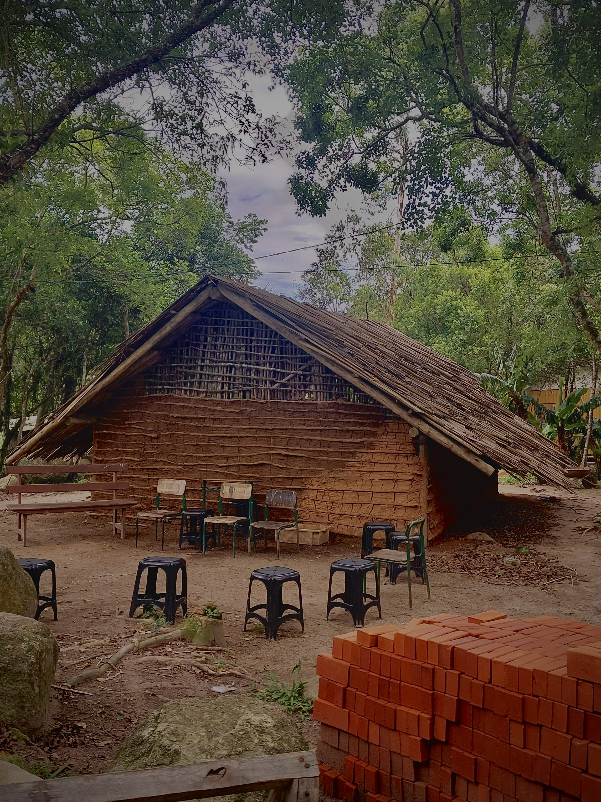
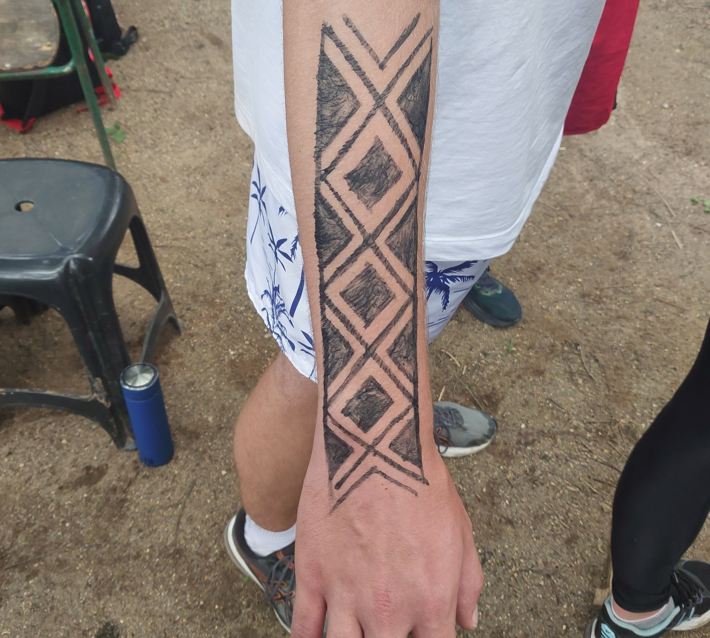
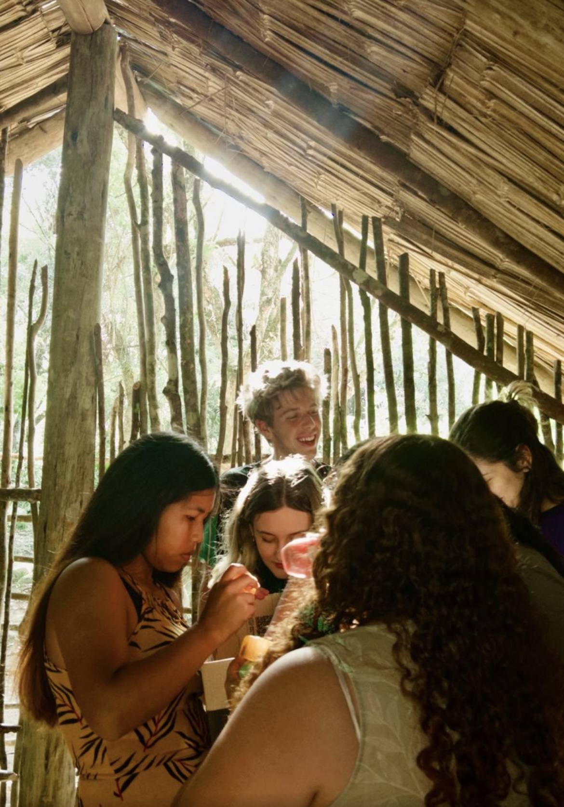

As comunidades indígenas enriquecem estruturalmente e culturalmente as diversas regiões do Brasil. Portanto,
é de extrema importância a aproximação com essas comunidades para com suas reivindicações, pois este é o
modo mais eficaz de preservar a cultura indigena, fortalecendo a união entre o poder público com os povos
tradicionais. Dentro da região de Palhoça, no litoral de Santa Catarina, encontra-se a Aldeia Guarani M'bya
Yaka Porã cujo território é área protegida no Morro dos Cavalos, a aldeia junto com outras duas aldeias do
mesmo povo, torna a região repleta de conhecimentos e experiências dos povos ancestrais que você pode
conhecer navegando no site. Conheça, compartilhe e fortaleça a comunidade indígena.
HISTÓRIA
COMO A ALDEIA SURGIU
Os povos Guarani M’bya e Nhandeva habitam a área da Serra do Tabuleiro há muitos
anos,
antes mesmo da criação da cidade de Palhoça, pois há indícios de que habitavam as margens da Praia da
Pinheira
e foram se afastando conforme o avanço urbano através da vinda de novos moradores a cidade. Com o passar
dos
anos, os povos tiveram que se concentrar na região montanhosa da Serra do Tabuleiro e no Morro dos
Cavalos e
até o dia 03 de dezembro deste ano (2024) eles não tinham a homologação do governo para demarcação do
seus
território, algo que era reivindicado a anos pela comunidade.
Atualmente a região do Morro dos Cavalos conta com 3 aldeias, sendo uma delas a Tyka
Porã, onde foi realizada a nossa pesquisa de campo. Conforme citado pela Cacica (Eliara) a comunidade
passou
e
passa por diversos problemas, mas eles sempre estarão lutando por suas causas. A aldeia é aberta à
comunidade,
sendo necessário agendar e informar sobre as visitas.
OS PROBLEMAS PASSADOS
Até o final do século XIX as comunidades habitantes da região, hoje conhecida como
Morro dos Cavalos, tinham menos participação e articulação política para defesa de suas terras. Foi
somente
a
partir dos anos 2000 que começou a ocorrer uma organização mais sistemática, visando a luta pela
demarcação
de
seu território, que com o passar dos anos estava se reduzindo cada vez mais a ponto de os isolarem a
somente
à
área do Morro dos Cavalos.
Além da falta de reconhecimento, a comunidade sofreu com muitas invasões e
martírios,
causados por indivíduos que buscavam conquistar as terras habitadas pelos povos indígenas da região.
Segundo
a
Cacica Eliara a sua comunidade sofreu com o medo por muito tempo, foram ameaçados com tiros, com fogo,
com a
destruição de suas casa e de seus barcos, chegando ao ponto de ameaçar a antiga cacica e matar um membro
da
comunidade. Cansados de temer aqueles que os reprimiam, a comunidade se reenergizou de esperança e
começou a
se
organizar para lutar por suas terras e reivindicar por tudo que lhes é de direito.
RECONSTRUÇÃO E LUTAS ATUAIS
Após todos aqueles acontecimentos, as comunidades se juntaram à Fundação Nacional dos Povos
Indígenas (FUNAI) para combater as invasões, algo que deu certo, pois diminuiu aos poucos as
invasões sem, no entanto, extingui-las. As comunidades aflitas com o que passaram sentiram a
necessidade de buscar através da luta política suas reivindicações. Foi então em 2015 que a busca
pela proteção territorial começou, exigindo o cercamento e proteção policial em todas as entradas da
aldeia, além de garantir a área como território indígena.
Conforme mencionado pela cacica, atualmente os ataques são de outra forma, realizados pelos
deputados e vereadores que vão contra as petições políticas da comunidade, “hoje a guerra é na
caneta” diz Wilmones, indígena que recepciona os visitantes). Ressalta-se também vandalismos aos
patrimônios da comunidade, mostrando que mesmo com policiamento o preconceito ainda acontece. Por
fim, a Cacica acrescentou dizendo que após as destruições, pessoas de fora da comunidade também
vieram ajudar na limpeza do local, mostrando a todos da comunidade que nem todos de fora querem lhes
explorar, e que a empatia ainda existe em meio a urbanização.
EDUCAÇÃO &
PROJETO SOCIOAMBIENTAL
Quando uma criança é introduzida a um ambiente escolar, uma das primeiras coisas a serem percebidas por
ela
é reciprocidade com seus demais colegas. A falta de se identificar em um meio onde se passa um bom tempo
de
seu dia é deplorável, e quando esta criança acaba por sofrer bullying, pois seus colegas não a enxergam
como
uma deles, sua vontade de querer ficar naquele local se reduz a zero. Esta situação ocorre com muitas
crianças brasileiras e aconteceu com as crianças da comunidade do Morro dos Cavalos.

Sabendo desta situação, a comunidade correu atrás para construir uma escola dentro de seu
território, que
atendesse as crianças, jovens, adultos e idosos. Foi instituída uma educação voltada para as
culturas e
necessidades da comunidade, criando pessoas não só para o mundo urbano como também para o mundo
indígena. A
escola foi construída com os materiais dispostos por todos da aldeias e de fora dela, já que o
governo de
Santa Catarina não quis custear com nenhum recurso e muito menos reconhecer a escola indígena, ao
entender
que a estrutura não era adequada para uma escola. Como uma forma de se adequar ao padrão exigido, a
Cacica
decidiu doar sua casa recém construída para ser a escola da comunidade.
A estrutura disciplinar de uma escola indígena é diferente ao compararmos com as escolas urbanas,
trazendo
aspectos mais envoltos para a comunidade, estão entre os principais objetivos as atividades práticas
e a
oratória. A escolha destas características está muito relacionado às preocupações futuras sobre a
preservação da cultura e meio ambiente, devido ao desestímulo da linguagem guarani e das práticas
indígenas.
A escola é multisseriada (contém alunos de séries e idades diferentes) e atualmente é dividida em
primário,
fundamental multisseriado e o Ensino de Jovens e Adultos multisseriado (EJA multisseriado). A aldeia
também
prioriza a contratação de professores e profissionais indígenas para promover a identificação entre
professores e estudantes. Conforme dito pela cacica, a comunidade não quer proibir que suas crianças
estudem
em outra escola, mas sim dar uma opção a elas, dando-as um local onde serão respeitadas e ensinas
com as
culturas da comunidade. “Seria bom que outras escolas viessem até aqui nos visitar, para assim
disseminar
que estamos aqui, e seguimos uma estrutura muito parecida com a de vocês” concluiu a cacica.
Dentre muitas das suas atividades práticas, uma delas tem relação com o reflorestamento das áreas
que
rodeiam a aldeia. Em conjunto com pesquisadores da UFSC, a comunidade começou um projeto
socioambiental para
reflorestar a floresta e fazer uma plantação no estilo agrofloresta, utilizando de espaços onde a
floresta
ainda não retomou para criar plantações sem agrotóxicos e cultivo desta conforme suas crenças. Como
dito
pelo por Wilmones) “Para reflorestar, primeiro temos que reflorestar a mente”.
CULTURA & CRENÇAS

A cultura guarani tem como base a crença na alma e na energia que interliga os seres vivos, as rezas, os
contos, as práticas, os cantos, as danças, o respeito à astrologia integram o cotidiano. Os povos
guarani,
não sendo diferente na aldeia Tekoá Italy. A mata ou a floresta é entendida como um ser que deve ter
respeito como qualquer um, eles creem que todo o ecossistema é baseado em energia, levando este conceito
para seu cotidiano. Fora a crença em energia, o respeito às autoridades é muito praticado na aldeia,
sendo
os mais velhos os quem tem razão sobre algo por ter mais vivência que os mais novos.
Como apresentado pelo (Wilmones que nos apresentou a aldeia), a Opy é o local onde a comunidade faz suas
rezas e seus contos, e para entrar nela é necessário estar com boas energias, mostrando que nunca se
deve
estar de mau humor diante a um local sagrado a eles. Lá dentro são feitas as conexões entre corpo e
espírito, pois o alinhamento entre os dois é essencial para estar bem consigo mesmo. A cultura guarani é
algo complexo e muito significante para todos, entender como ela funciona é essencial para
compreendermos
melhor como é o dia a dia destes povos, e assim nos simpatizamos.
CONTO
O conto indígena "A Voz do Trovão" é uma narrativa rica em simbolismo e valores
culturais, que reflete a visão de mundo das comunidades indígenas, em especial os povos que habitam
a
região
amazônica. Ao analisar seus elementos narrativos, é possível perceber como o autor ou a tradição
oral
transmite
significados profundos sobre a relação entre o ser humano e a natureza, assim como o respeito pelos
mitos e
tradições indígenas.
NARRADOR

O narrador do conto pode ser entendido como alguém que se posiciona fora da história,
mas com um conhecimento profundo dos acontecimentos e das crenças dos personagens. O ponto de vista
adotado é
externo, com uma narrativa em terceira pessoa, proporcionando ao leitor uma visão panorâmica e
onisciente, o
que permite uma compreensão mais rica das relações entre os personagens e o ambiente natural. Essa
voz
narrativa é comum nas histórias indígenas, onde o narrador transmite sabedoria ancestral.
PERSONAGENS
Os personagens de "A Voz do Trovão" são tipicamente arquetípicos da tradição indígena,
representando figuras de forças naturais ou mitológicas. Um exemplo disso é o trovão, que
personifica
uma
entidade poderosa e sobrenatural, sendo visto como uma força da natureza com poder sobre os seres
humanos.
Outros personagens podem ser seres humanos ou entidades espirituais, que interagem com a natureza e
buscam
compreender ou respeitar seus mistérios. A identificação entre os personagens e a natureza é um dos
pontos
centrais do conto. As ações e os conflitos dos personagens estão frequentemente imbricados no
ambiente
natural,
o que reflete a crença de que tudo no mundo está interligado, inclusive as forças naturais e os
seres
humanos.
A busca pela harmonia com os elementos da terra, o céu e a água é um tema recorrente.
TEMPO
O tempo da narrativa é cíclico e atemporal, típico das culturas indígenas. Em muitas
histórias indígenas, o passado, o presente e o futuro não são vistos como separados, mas como um
contínuo, onde
o passado mitológico é tão presente quanto o momento atual. "A Voz do Trovão" segue essa lógica,
misturando
tempos históricos e míticos para transmitir uma visão espiritualizada do tempo. O trovão, como
elemento
mitológico, tem um papel atemporal, atravessando gerações e influenciando o comportamento das
pessoas.
ESPAÇO
O espaço da narrativa é profundamente enraizado na natureza. A história se passa em
ambientes selvagens, florestas e rios, que são descritos de forma detalhada e simbólica. A floresta
é um
lugar
sagrado, onde os seres humanos e as entidades espirituais interagem. A natureza é tratada com
respeito e
reverência, sendo mais do que um simples cenário, mas um participante ativo no desenrolar da trama.
O
espaço,
assim, reflete as crenças indígenas de que a natureza é viva, dotada de forças que devem ser
compreendidas e
respeitadas.
ENREDO
O enredo de "A Voz do Trovão" gira em torno do confronto ou da busca de entendimento
entre o ser humano e as forças naturais, representadas pelo trovão. Esse tipo de narrativa é comum
na
literatura indígena, em que o personagem, muitas vezes um herói, precisa aprender a respeitar e
conviver
com as
forças da natureza. Através dessa relação, o conto transmite uma lição moral ou espiritual,
mostrando
que os
seres humanos devem encontrar o equilíbrio entre suas ações e o mundo natural. A história pode
envolver
um tipo
de jornada, onde o protagonista é testado por forças além do seu controle e precisa amadurecer
espiritualmente.
CONTEXTO CULTURAL
O conto "A Voz do Trovão" reflete as crenças espirituais e a cosmovisão indígena, em
que os fenômenos naturais são interpretados como manifestações divinas e sobrenaturais. O trovão,
por
exemplo,
não é apenas um fenômeno atmosférico, mas uma entidade que pode ter um papel ativo nas vidas dos
personagens.
Isso se alinha com a visão holística e espiritual da natureza típica das culturas indígenas, onde
seres
humanos, animais, plantas e forças naturais estão todos entrelaçados.
Além disso, a história enfatiza a importância da sabedoria ancestral, que é passada de
geração em geração, seja por meio da tradição oral ou das práticas cotidianas. A interação com a
natureza e a
busca por harmonia são temas essenciais para a formação do caráter e para o entendimento da vida, do
cosmos e
dos seres espirituais.
CONCLUSÃO
"A Voz do Trovão" é um conto que sintetiza muitos dos elementos fundamentais das
culturas indígenas: o respeito pela natureza, o reconhecimento de forças espirituais no cotidiano, a
moralidade
ligada à harmonia com o mundo ao redor e a importância da sabedoria ancestral. O conto não apenas
conta
uma
história, mas também transmite uma filosofia de vida enraizada no profundo vínculo entre o ser
humano e
o meio
ambiente.
EXPERIENCIANDO NA PELE
A visita a Aldeia Guarani M'bya Yaka Porã foi especial para os estudantes do
IFSC Palhoça Bilíngue. Aproveitamos a ótima hospitalidade dos moradores para visitar o local,
passando
em frente às casas, admirando a natureza e fazendo carinho nos animais domésticos que moram na
aldeia,
fora isso, as conversas com os moradores serviram para nos esclarecer sobre o cotidiano da aldeia.
Demonstrando que a aldeia M'bya Yaka Porã está de portas abertas para receber visitantes,
compartilhando
suas belezas e suas histórias.
CONVERSAÇÃO
Ao chegarmos e nos acomodarmos ao ar livre em cadeiras e bancos de madeira, a cacique nos contou sobre
como
a aldeia surgiu e as dificuldades que os moradores sofreram/sofrem, como complicações na demarcação
territorial (principal pauta de luta durante anos), ataques e invasões ao povo da aldeia (gerando
queimadas,
tiros, agressões e até mortes), problemas com o governo do estado de Santa Catarina ( falta de recursos
para
o aprimoramento educacional da aldeia pelas regras de ensino) e com vandalismos realizados nas placas
que
demarcam o território indigena.
A Cacica relatou também os avanços da comunidade com a reconstrução das casas que foram
atacadas, as conquistas judiciais ( como a proteção do Estado atualmente) e a construção da escola que
contempla todo o fundamental. Nos mostrando que para conseguir evoluir é preciso muito esforço e
paciência,
algo muito ressaltado pela cultura da aldeia.
TRILHA
Após a conversa começamos a subir a trilha até a tão aclamada cachoeira, a trilha era
bem aberta com muita subida rodeada por árvores e iluminada pelos pequenos raios de sol que apareciam
durante
aquele dia nublado. Entre paradas para descansar e encher as garrafinhas de água, aproveitamos para
tirarmos
algumas fotos e também para diversão. Após 30 minutos de trilha chegamos na cachoeira onde aproveitamos
cada
segundo para nadar, pular, conversar e tirar fotos, a sensação de alívio ao mergulhar naquela água
gelada e
cristalina enquanto escutavamos o cair das águas foi esplêndido.
ARTES CULTURAIS
Ao retornarmos da cachoeira fomos almoçar em uma das casas da aldeia, passando por
obras de artesanatos feitas por moradores da aldeia que representam um pouco da cultura e da religião
local.
Outra forma cultural e religiosa mostrada foi as pinturas corporais realizadas para eventos e festas,
fazendo
demonstrações em alguns alunos que se voluntariaram, e concluindo assim, a nossa visita a aldeia.
OPINIÃO DA EQUIPE
A saída para a aldeia foi muito diversa e contemplativa, a amplitude de conhecimento
e, principalmente, de vivência que trouxemos da aldeia é algo que levaremos não só para o trabalho como
também
para nossas vidas.